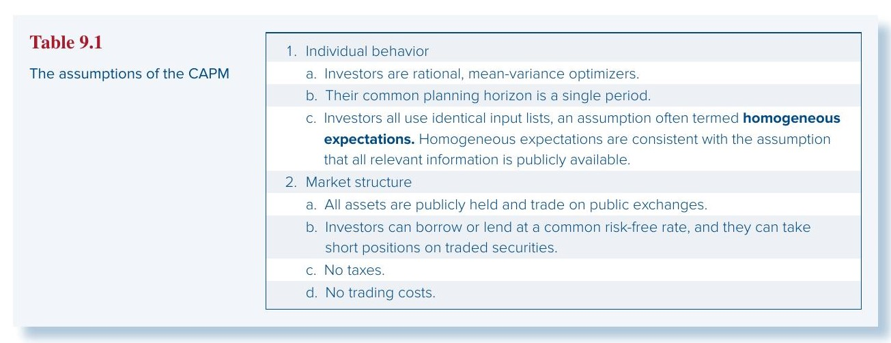
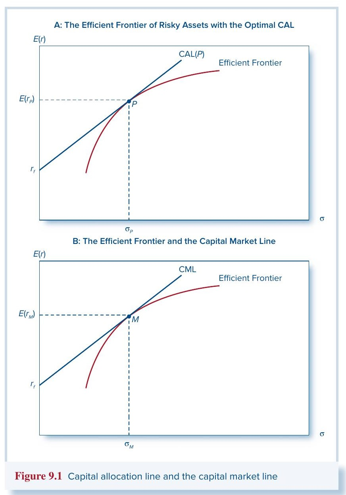
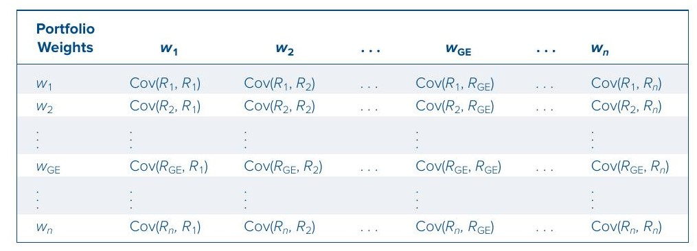
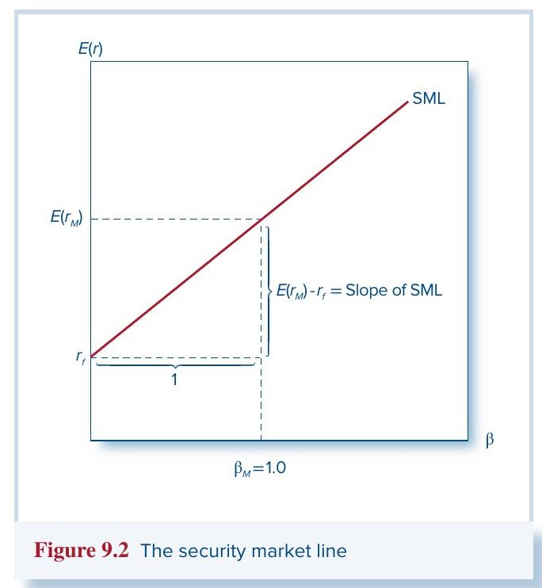
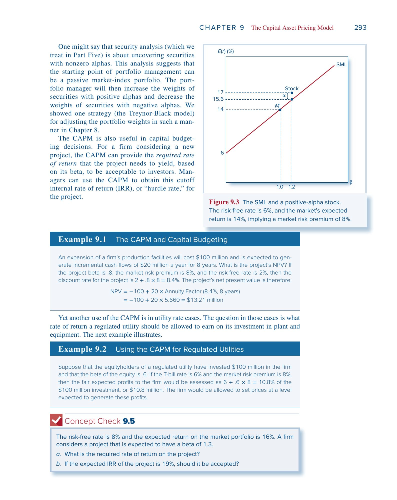
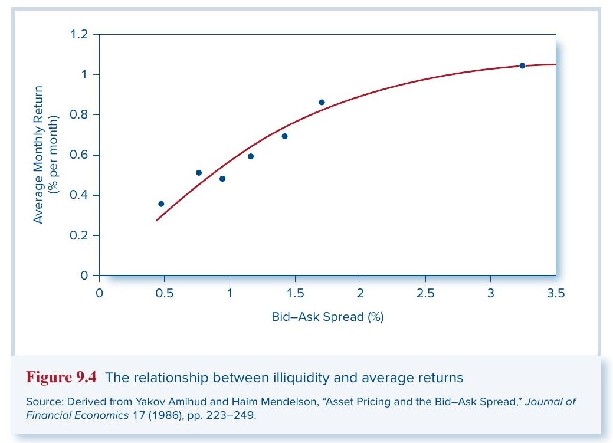

Chapter 9 · 资本资产定价模型 (CAPM) 学习笔记
教材：Bodie, Kane & Marcus, Investments, 13e, Chapter 9
一、CAPM 要回答什么问题？
投资中最核心的问题之一是：一个资产的"合理"预期收益率应该是多少？ 我们直觉地知道风险越高、回报应该越高，但"风险"怎么量化、对应多少回报，需要一个精确的框架。CAPM 正是给出这个框架的模型——它把资产的风险与其应得的预期收益用一个公式联系起来。
CAPM 服务于两个核心功能：第一，它为评价投资提供了一个基准收益率——给定某只股票的风险水平，它"应该"提供多少回报？如果你预测的收益高于这个基准，说明股票被低估了。第二，它帮助我们为尚未交易的资产定价——比如 IPO 时一只新股应该以什么价格发行？一个新投资项目的折现率应该设为多少？
CAPM 由 William Sharpe (1964)、John Lintner (1965) 和 Jan Mossin (1966) 在 Harry Markowitz (1952) 均值-方差优化理论的基础上独立发展而来。从 Markowitz 的组合选择到 CAPM 的均衡定价，经历了 12 年，说明这个跨越并不简单。
二、CAPM 的假设
CAPM 构建在一组理想化的假设之上。虽然这些假设在现实中不可能完全成立，但它们让我们先在一个简洁的框架里理解风险与收益的核心关系，之后再逐步放松。

两组假设可以简要概括如下：
投资者行为假设：
- (a) 所有投资者都是理性的均值-方差优化者，只关心组合的期望收益 $E(r)$ 和方差 $\sigma^2$。这意味着投资者不关心收益分布的更高阶矩（如偏度、峰度），也不关心收益与消费品价格、未来投资机会等的相关性——他们只看"赚多少"和"波动多大"。
- (b) 所有人的投资期限相同（单期）。没有人需要为多期消费计划做跨期优化。
- (c) 所有人使用相同的信息，对资产的预期收益、方差、协方差的估计完全一致——即同质预期 (homogeneous expectations)。这与"所有相关信息都是公开的"这一条件一致。
市场结构假设：
- (a) 所有资产都可以公开交易，都可以被纳入投资者的组合中。
- (b) 投资者可以以同一个无风险利率 $r_f$ 自由借入或贷出，也可以对任何已交易的证券做空。
- (c) 没有税收。
- (d) 没有交易成本。
这些假设确实很强，但基本 CAPM 的核心结论——风险溢价正比于系统性风险暴露，与公司特有风险无关——在各种更复杂的变体中都保持成立。
三、从假设到市场组合
3.1 所有人选择同一个最优风险组合
在上述假设下，每个投资者用 Markowitz 模型做优化：给定相同的输入列表（期望收益向量、协方差矩阵），所有人画出相同的有效前沿，再用同一个 $r_f$ 画切线，得到同一个切点组合 $P$。这里用到了假设 1(a)（均值-方差优化）、2(a)（所有资产可交易）和 2(b)（可以无风险利率借贷）。
使用共同输入列表这一点，显然需要假设 1(c)（同质预期），但也隐含地依赖于假设 1(b)（共同投资期限）——如果投资期限不同，最优组合自然不同。同时还隐含地假设了税率和交易成本的差异不会影响投资选择（假设 2(c) 和 2(d)）。
3.2 最优风险组合就是市场组合
既然所有投资者选择的最优风险组合完全相同，把所有人的持仓加总起来就是整个市场。所以 $P$ 必须就是市场组合 $M$——按市值加权包含所有资产的组合。每只股票在 $M$ 中的权重等于该股票的市值（股价 × 总股本）除以所有股票的总市值。
例如，如果每个人的最优组合中微软占 1%，那么微软在市场组合中也占 1%。

上图 Panel A 是一般情况下单个投资者的最优资本配置线 CAL 和切点 $P$；Panel B 是 CAPM 均衡下，所有人的切点都是市场组合 $M$，此时 CAL 变成了资本市场线 (CML)。
3.3 价格调整机制保证所有资产都被包含
假如某只股票（比如 Delta Airlines）没有被纳入最优组合，意味着所有投资者的需求为零，Delta 的股价会一路下跌。价格越跌，它变得越有吸引力，其他股票相对而言就没那么有吸引力了。最终 Delta 会达到一个足够便宜的价格，使得它被纳入最优组合。这个价格调整过程保证了所有资产都必须被包含在市场组合中——区别只是以什么价格被包含。
3.4 被动策略是有效的——共同基金定理
如果市场组合本身就是最优风险组合，投资者不需要做证券分析，只需持有一个跟踪市场的指数基金即可获得有效分散化。这就是共同基金定理 (mutual fund theorem)——它是分离定理（Chapter 7）的另一种表述。如果所有投资者都自愿持有市场组合，那么把所有股票替换为一只持有市场组合的共同基金，没有人会反对。
当然，如果真的所有人都采用被动策略而没有人做证券分析，那么价格就不会反映信息，这个结果也就不再成立了。这个悖论在 Chapter 11（市场有效性）中有更深入的讨论。
在现实中，不同的投资经理确实会构建与市场指数不同的风险组合，这主要归因于他们使用了不同的输入列表。但共同基金定理的实践意义在于：不做证券分析的被动投资者，可以把市场指数视为有效风险组合的合理近似。
四、市场风险溢价
4.1 均衡推导
所有投资者都在市场组合 $M$ 和无风险资产之间做资本配置。回忆 Chapter 6 的结论，每个人分配到 $M$ 的比例为：
$y = \frac{E(r_M) - r_f}{A\sigma_M^2} \tag{9.1}$
其中 $A$ 是该投资者的风险厌恶系数。
在简化的 CAPM 经济中，无风险投资实际上就是投资者之间的借贷——一个人的借款对应另一个人的贷款。因此，所有投资者的净借贷之和为零，平均配置比例 $\bar{y} = 1$。令 $y = 1$，用代表性投资者的风险厌恶 $\bar{A}$ 代入并整理，得到：
$\boxed{E(R_M) = \bar{A}\,\sigma_M^2} \tag{9.2}$
其中 $E(R_M) = E(r_M) - r_f$ 是市场风险溢价（市场超额收益的期望）。
4.2 经济含义
这个方程说：市场风险溢价同时正比于市场方差和平均风险厌恶程度。
直觉很清楚：当投资者购买股票时，需求推高了价格，降低了预期收益率和风险溢价。但当风险溢价变低时，投资者会把一部分资金从风险市场组合转移到无风险资产。在均衡中，市场组合的风险溢价必须恰好高到足以诱导投资者持有全部可用的股票供给。如果风险溢价太高，对证券的需求会过剩，价格上涨；如果太低，投资者持有的股票不够吸收供给，价格下跌。
4.3 数值例子（Concept Check 9.2）
美国股市过去 95 年的数据：平均超额收益 8.9%，标准差 20.3%。如果这些数据近似投资者的预期：
(a) 平均风险厌恶系数为：
$\bar{A} = \frac{E(R_M)}{\sigma_M^2} = \frac{0.089}{0.203^2} = 2.16$
(b) 如果 $\bar{A} = 3.5$，对应的风险溢价为：
$E(R_M) = 3.5 \times 0.203^2 = 14.4\%$
五、单个资产的预期收益——CAPM 核心公式推导
这是整章最关键的部分。问题变成：对市场组合中的某个成分（以 GE 为例），它应该提供多少风险溢价？
5.1 核心思想
CAPM 建立在一个关键洞察上：资产的合理风险溢价由它对投资者整体组合风险的贡献决定。组合风险才是投资者真正关心的，也是决定他们所要求的风险溢价的因素。因此，衡量单个资产风险的正确方式不是它自身的方差 $\sigma_i^2$，而是它对市场组合方差 $\sigma_M^2$ 的边际贡献。
5.2 GE 对市场组合方差的贡献
市场组合的方差可以通过加权协方差矩阵计算——把矩阵中所有元素，乘以对应的行权重和列权重，然后求和。GE 对 $\sigma_M^2$ 的贡献来自矩阵中 GE 对应那一列的所有协方差项，每个协方差项先乘以 GE 自身的列权重和对应行的权重：

写成公式，GE 的贡献为：
$w_{\text{GE}}\Big[w_1\text{Cov}(R_1, R_{\text{GE}}) + w_2\text{Cov}(R_2, R_{\text{GE}}) + \cdots + w_n\text{Cov}(R_n, R_{\text{GE}})\Big] \tag{9.3}$
方括号内的每一项 $w_i\text{Cov}(R_i, R_{\text{GE}})$ 可以改写为 $\text{Cov}(w_iR_i, R_{\text{GE}})$。然后利用协方差对第一个变量的线性性质（即 $\text{Cov}$ 关于求和可以"提"出来），方括号内整体化简为：
$\sum_{i=1}^{n} w_i \,\text{Cov}(R_i, R_{\text{GE}}) = \text{Cov}\!\left(\sum_{i=1}^{n} w_i R_i,\; R_{\text{GE}}\right) = \text{Cov}(R_M, R_{\text{GE}}) \tag{9.4}$
最后一步用了 $\sum_{i=1}^{n} w_i R_i = R_M$（市场组合收益的定义）。
因此，GE 对 $\sigma_M^2$ 的贡献简化为 $w_{\text{GE}}\,\text{Cov}(R_{\text{GE}}, R_M)$。
直觉：如果 GE 与整个市场的协方差大（正向联动强），它就放大了组合的整体波动，是一个"增风险"的成分；如果协方差小甚至为负（逆市场运动），它反而能分散风险，是一个"减风险"的成分。这就是为什么 CAPM 用 $\text{Cov}(R_i, R_M)$ 而不是 $\sigma_i^2$ 来度量单个资产的"风险"——在充分分散化的组合中，真正重要的是资产与组合的联动，而不是它自身的总波动。
5.3 均衡论证：风险-回报比必须相等
GE 对市场组合贡献了两样东西：
- 收益贡献：$w_{\text{GE}}\,E(R_{\text{GE}})$
- 风险贡献：$w_{\text{GE}}\,\text{Cov}(R_{\text{GE}}, R_M)$
两者做比值，$w_{\text{GE}}$ 约掉，就得到 GE 的风险-回报比（reward-to-risk ratio）：
$\frac{E(R_{\text{GE}})}{\text{Cov}(R_{\text{GE}}, R_M)}$
这个比值的含义是：每承担一单位对市场组合的风险贡献，GE 提供多少风险溢价。
而市场组合自身的风险-回报比（称为市场风险价格 (market price of risk)）是：
$\frac{E(R_M)}{\sigma_M^2} \tag{9.5}$
注意：对于有效组合的成分（如 GE），我们用 $\text{Cov}(R_i, R_M)$ 来度量风险（对组合方差的贡献）；对于有效组合本身，方差 $\sigma_M^2$ 才是合适的风险度量。另外，市场风险价格有时被误认为是 Sharpe 比率 $\frac{E(R_M)}{\sigma_M}$，但这是不对的——风险价格是把风险溢价与方差（或协方差）相联系，而不是与标准差相联系。
在均衡中，所有投资的风险-回报比必须相等。如果某个资产的比率更高，投资者会涌向它、推高价格、压低预期收益；比率更低的资产则被抛售、价格下跌、预期收益上升。调整持续到所有比率被拉平：
$\frac{E(R_{\text{GE}})}{\text{Cov}(R_{\text{GE}}, R_M)} = \frac{E(R_M)}{\sigma_M^2} \tag{9.6}$
5.4 整理得到 CAPM 公式
从 (9.6) 整理，先求出 GE 的超额收益：
$E(R_{\text{GE}}) = \frac{\text{Cov}(R_{\text{GE}}, R_M)}{\sigma_M^2}\,E(R_M) \tag{9.7}$
定义 beta：
$\beta_i = \frac{\text{Cov}(R_i, R_M)}{\sigma_M^2}$
于是 (9.7) 变为 $E(R_{\text{GE}}) = \beta_{\text{GE}} \cdot E(R_M)$。
接下来把超额收益还原为总收益。$R_i = r_i - r_f$ 表示超额收益，所以 $E(R_i) = E(r_i) - r_f$，$E(R_M) = E(r_M) - r_f$。代入：
$E(r_{\text{GE}}) - r_f = \beta_{\text{GE}}\,[E(r_M) - r_f]$
将 $r_f$ 移到右边：
$E(r_{\text{GE}}) = r_f + \beta_{\text{GE}}\,[E(r_M) - r_f]$
这对任意资产 $i$ 都成立，写成一般形式就是 CAPM 的核心公式：
$\boxed{E(r_i) = r_f + \beta_i\,[E(r_M) - r_f]} \tag{9.8}$
5.5 公式的解读
公式 (9.8) 告诉我们，资产 $i$ 的总预期收益由两部分组成：
- $r_f$：无风险收益率，是所有资产都有的基础回报，补偿投资者推迟消费的时间成本（即使 $\beta = 0$，你放弃了这段时间使用这笔钱的机会，也应该得到 $r_f$）。
- $\beta_i[E(r_M) - r_f]$：风险溢价，补偿投资者承担的系统性风险。它是"基准风险溢价"（市场风险溢价 $E(r_M) - r_f$）和该资产的"相对风险"（$\beta_i$）的乘积。
几个关键含义：
- $\beta$ 衡量的是资产与市场的联动程度，不是资产自身的总波动率 $\sigma_i$。
- 一个 $\beta = 0$ 的资产，预期收益就是 $r_f$，没有风险补偿。$\beta$ 越大，风险补偿越高。
- 市场组合的 $\beta_M = \text{Cov}(R_M, R_M)/\sigma_M^2 = \sigma_M^2/\sigma_M^2 = 1$（Eq. 9.9），代入公式自洽。这也确立了 1 是所有资产 $\beta$ 的加权平均值。
- $\beta > 1$ 为激进型 (aggressive)：对市场波动的敏感度高于平均水平；$\beta < 1$ 为防御型 (defensive)。
- 公司特有风险（非系统性风险）不被定价。一家药企研发新药，结果高度不确定（高 $\sigma_i$），但如果这个不确定性与宏观经济无关（低 $\beta$），CAPM 预测它不需要高风险溢价。投资者意识到这种风险在分散化组合中会被消除，因此不会为它要求补偿。
5.6 CAPM 对组合同样成立
如果 CAPM 对每个单独的资产成立，那么对资产的任何组合也成立。设组合 $P$ 中资产 $k$ 的权重为 $w_k$，对每只股票写出 CAPM 方程并乘以权重，然后逐列求和：
$E(r_P) = r_f + \beta_P[E(r_M) - r_f]$
其中 $E(r_P) = \sum_k w_k E(r_k)$ 是组合预期收益，$\beta_P = \sum_k w_k \beta_k$ 是组合 beta。
5.7 数值例子（Concept Check 9.3）
市场风险溢价 8%，标准差 22%。组合：25% Toyota（$\beta = 1.10$）+ 75% Ford（$\beta = 1.25$）。
$\beta_P = 0.25 \times 1.10 + 0.75 \times 1.25 = 1.2125$
$E(R_P) = 1.2125 \times 8\% = 9.7\%$
六、证券市场线 (SML) 与 Alpha
6.1 SML 的含义
将公式 (9.8) 画在以 $\beta$ 为横轴、$E(r)$ 为纵轴的图上，就得到证券市场线 (Security Market Line, SML)。

SML 的几何特征很简单：截距为 $r_f$（$\beta = 0$ 时），斜率为市场风险溢价 $E(r_M) - r_f$，在 $\beta = 1$ 处纵轴对应 $E(r_M)$。在 CAPM 均衡中，所有资产都恰好落在 SML 上——它们的预期收益与其 $\beta$ 对应的"公平"回报完全一致。
6.2 SML 与 CML 的区别
这两条线容易混淆，但它们描述的是不同的东西：
- CML（资本市场线）：横轴是标准差 $\sigma$，描绘的是有效组合（市场组合与无风险资产的混合）的风险-收益关系。标准差是有效组合的合适风险度量，因为这类组合已经充分分散化了。
- SML（证券市场线）：横轴是 $\beta$，描绘的是任意单个资产或组合的风险-收益关系。对单个资产而言，大量波动是公司特有的、可以被分散掉的，用 $\beta$（只反映系统性风险）来衡量风险才合适。
SML 对有效组合和单个资产都适用；CML 只对有效组合适用。
6.3 Alpha 的定义
SML 给出了一个"基准"——给定资产的 $\beta$，它的公平预期收益应该是多少。如果投资者通过自己的分析（证券分析），认为某只股票的实际预期收益与 SML 给出的公平收益不同，这个差值就是 alpha ($\alpha$)：
$\alpha_i = E(r_i)_{\text{预测}} - \big[r_f + \beta_i(E(r_M) - r_f)\big]$

教材的具体例子：$r_f = 6\%$，$E(r_M) = 14\%$（市场风险溢价 $= 8\%$），某股票 $\beta = 1.2$。SML 预测它的公平收益应该是：
$6 + 1.2 \times (14 - 6) = 6 + 9.6 = 15.6\%$
如果分析师认为它的预期收益实际是 $17\%$，则：
$\alpha = 17\% - 15.6\% = 1.4\%$
Alpha 的判断标准：
- $\alpha > 0$：低估 (underpriced)，位于 SML 上方，预期收益超过其风险应得，值得买入。
- $\alpha < 0$：高估 (overpriced)，位于 SML 下方，预期收益不够补偿其风险，应回避或做空。
- $\alpha = 0$：合理定价 (fairly priced)，恰好在 SML 上。
可以说，证券分析（本书 Part Five 的内容）的核心目标就是寻找 $\alpha \neq 0$ 的证券。组合管理的起点可以是被动市场指数组合，然后增加正 $\alpha$ 股票的权重、减少负 $\alpha$ 股票的权重（Treynor-Black 模型，见 Chapter 8）。
6.4 CAPM 与资本预算
CAPM 在企业财务中的重要应用是确定投资项目的折现率（hurdle rate）。
Example 9.1（资本预算）：某项目投资 1 亿美元，预计未来 8 年每年产生 2000 万税后现金流，$\beta = 0.8$，$r_f = 2\%$，市场风险溢价 $8\%$。CAPM 给出的折现率为 $2 + 0.8 \times 8 = 8.4\%$。项目的 NPV 为：
$\text{NPV} = -100 + 20 \times \text{Annuity Factor}(8.4\%,\, 8\text{ years}) = -100 + 20 \times 5.660 = 13.21 \text{ (百万)}$
NPV > 0，项目值得投资。
Example 9.2（受监管公用事业）：一家受监管公用事业投资了 1 亿美元，$\beta = 0.6$，$r_f = 6\%$，市场风险溢价 $8\%$。CAPM 给出的合理回报率为 $6 + 0.6 \times 8 = 10.8\%$。监管机构据此允许公司设定价格使预期利润为 1080 万美元。
6.5 CAPM 与指数模型的关系——为什么均衡中 Alpha 应为零
指数模型（Chapter 8 的 Equation 8.8）描述的是已实现的超额收益：
$R_i = \alpha_i + \beta_i R_M + e_i \tag{9.10}$
其中 $R_i = r_i - r_f$ 是超额收益，$\alpha_i$ 是非市场溢价，$\beta_i R_M$ 是市场因子贡献，$e_i$ 是公司特有冲击。
因为 $E(e_i) = 0$，取期望：
$E(R_i) = \alpha_i + \beta_i E(R_M) \tag{9.11}$
而 CAPM 的预测（将 (9.8) 改写为超额收益形式）是：
$E(R_i) = \beta_i E(R_M) \tag{9.12}$
比较 (9.11) 和 (9.12)，CAPM 的预测就是对所有股票 $\alpha_i = 0$。
逻辑也很直观：$\alpha > 0$ 意味着"无风险的超额回报"。投资者会争相买入正 $\alpha$ 股票、推高价格、压低预期收益；对称地，会抛售或做空负 $\alpha$ 股票、压低价格、提高预期收益。这种组合再平衡会持续到所有 $\alpha$ 归零。此时投资者满足于充分分散化、消除独特风险，即持有最广泛的市场组合。当所有 $\alpha = 0$ 时，市场组合就是最优风险组合。
当然，在现实的任何特定样本期间，某些公司表现会好于预期（正 $\alpha$），另一些会令人失望（负 $\alpha$）。但如果 CAPM 是正确的，对任何一组股票而言，估计出的 $\alpha$ 值应该围绕零聚集。
七、放松假设——CAPM 的扩展
基本 CAPM 建立在一组很强的假设上，现实中很多都不成立。本节逐一考察放松每个假设后模型会如何变化。核心发现是：虽然具体形式会改变，但系统性风险与可分散风险之间的根本区分始终成立。
7.1 同质预期、卖空限制与税收
同质预期（假设 1c）看起来最不现实，但问题不大。只要信息是公开的，投资者对公司前景的判断不会差太远。即使有分歧，不同投资者的交易会互相抵消，价格反映共识预期。
但卖空限制会破坏这个结论。正常情况下，如果股价高于内在价值，理性投资者会做空，把价格压回来。但现实中卖空面临三个障碍：(1) 空头仓位的亏损理论上无上限，需要大量保证金；(2) 可供借入做空的股票数量有限；(3) 很多机构被监管禁止做空。卖空受限意味着高估的价格不能被有效纠正，形成泡沫的前兆。
税收（假设 2c）理论上会导致不同投资者面对不同的税后收益。但实证上税收对股票收益的影响不大，原因是客户效应 (clientele effect)：高税率投资者回避高股息股票 → 价格被压低 → 免税投资者觉得便宜就买入，填补需求缺口。同时，如果公司发现高股息会压低股价，它们会转向股票回购替代分红，进一步中和税收效应。
7.2 无风险借贷受限——零-Beta CAPM
基本 CAPM 假设所有人可以以 $r_f$ 自由借贷（假设 2b）。如果借贷受限（比如借款利率远高于贷款利率），不同投资者会选择不同的切点组合，市场组合不再是所有人的最优风险组合。
Merton 和 Roll 独立发现了有效前沿组合的若干重要数学性质：(1) 两个前沿组合的任意线性组合仍在前沿上；(2) 每个投资者仍从前沿上选择，所以市场组合（作为前沿组合的加总）也在前沿上；(3) 前沿上的每个组合（除全局最小方差组合外），都有一个与之不相关的"伴侣"组合——即零-beta 组合 $Z$。
Fischer Black (1972) 利用这些性质推导出：
$E(r_i) = E(r_Z) + \beta_i\,[E(r_M) - E(r_Z)] \tag{9.13}$
和基本 CAPM 对比，唯一的变化是 $r_f$ 被替换为零-beta 组合的期望收益 $E(r_Z)$。由于 $E(r_Z) > r_f$，斜率 $E(r_M) - E(r_Z) < E(r_M) - r_f$，SML 变得更平坦。
为什么变平坦？风险偏好高的投资者本来想借钱加杠杆买切点组合，但借贷受限做不到，就转而去买高 $\beta$（高预期收益）的股票作为替代，同时减持低 $\beta$ 股票。结果是高 $\beta$ 股票价格被推高、风险溢价被压低，低 $\beta$ 股票反之。整体效果是 SML 变平。
7.3 非交易资产：劳动收入与私人企业
假设 2(a)（所有资产可交易）对"市场组合是所有人的共同最优风险组合"这一结论至关重要。但现实中很多资产不可交易：
- 人力资本（未来工资收入的现值）不能买卖，而且在国民收入中占约 60%，规模远大于可交易金融资产的总市值。
- 私人企业按定义不能在公开市场交易。
这意味着不同投资者的最优组合会不同：
- 家族企业主的财富已经高度集中在自家企业上，应该回避与自家业务高度相关的股票。
- Delta 航空的员工应该避免投资航空业相关股票，因为他们的工资收入已经高度暴露于航空业风险。
Mayers (1972) 推导了包含劳动收入的均衡模型，需要在市场组合中纳入人力资本，并考虑资产收益与总体人力资本"组合"的协方差。
另一个影响涉及风险分担的不均匀：年轻人拥有大量人力资本但很少金融资本，如果不能借钱投资股市，金融风险就集中在中老年投资者身上。这种集中可能导致市场风险溢价高于 (9.2) 式的预测 (Constantinides, Donaldson & Mehra, 2002)。
对于偏好特征与可交易证券不同的私人企业，最能对冲典型私人企业风险的可交易资产组合会享有额外需求，价格被推高，预期收益相对于 CAPM 预测偏低。Heaton & Lucas (2000) 的研究表明，在标准定价模型中加入专有收入（proprietary income）确实改善了预测效果。
7.4 多期模型与对冲组合——Merton 的 ICAPM
假设 1(a)（只关心均值和方差）排除了投资者对资产收益与通胀、能源价格、未来投资机会变化等之间相关性的关注。假设 1(b)（单期）同样排除了跨期考虑。放松这些假设后，投资者产生对冲需求 (hedging demands)。
教材给出三个思想实验来说明为什么均值-方差之外的因素也重要：
- 你愿意拥有 110 万美元但油价 400 美元/桶，还是 100 万美元但油价 40 美元/桶？如果你是大量消费能源的人，后者的消费可能更高。
- 你愿意拥有 100 万美元且实际利率 10%，还是 110 万美元且实际利率 1%？前者的未来消费流可能更高。
- 你愿意拥有 100 万美元且市场标准差 10%，还是 110 万美元且标准差 50%？前者允许你在市场中配置更高比例并获得更高风险溢价。
这些例子说明：投资者应该关心的不只是财富的美元价值的风险和回报，更应关心财富能买到的消费流。
Robert C. Merton 发展了跨期资本资产定价模型 (ICAPM)，让投资者在整个生命周期中持续优化消费/投资决策。在一个特殊情况下——投资机会集（无风险利率、收益分布）不随时间变化——ICAPM 退化为基本 CAPM。
但如果存在额外的风险源，情况就变了：
- 投资机会集变化：未来无风险利率可能下降 → 退休收入受损 → 投资者愿意牺牲一些预期收益去持有利率下降时表现好的资产（如长期债券），推高这些资产的价格。
- 消费品价格变化：通胀上升 → 购买力受损 → 投资者偏好能对冲通胀的资产。类似地，能对冲能源价格不确定性的能源公司股票也会有额外需求。
如果有 $K$ 个额外风险源，每个都有对应的对冲组合，ICAPM 的定价公式推广为：
$E(R_i) = \beta_{iM}\,E(R_M) + \sum_{k=1}^{K}\beta_{ik}\,E(R_k) \tag{9.14}$
其中 $\beta_{iM}$ 是通常的市场 beta，$\beta_{ik}$ 是资产 $i$ 对第 $k$ 个对冲组合的 beta。资产的风险溢价是它在所有系统性风险源上暴露的补偿之和。基本 CAPM 是 $K = 0$ 的特例。
7.5 消费 CAPM (CCAPM)
CAPM 的逻辑加上对冲需求的考虑，提示我们可以直接围绕消费来建模。这类模型由 Mark Rubinstein (1976)、Robert Lucas (1978)、Douglas Breeden (1979) 开创。
核心思想：在经济困难时期（消费稀缺、资源紧张），额外一块钱的效用远高于经济繁荣时（消费已经充裕）。因此：
- 与消费增长正协方差的资产更"危险"——它在消费已经高的时候给出高回报（锦上添花），在消费低迷时给出低回报（雪上加霜），不能提供保险。
- 与消费增长负协方差的资产更"安全"——它在困难时期表现好，提供了宝贵的保险功能。
由此推出：
$E(R_i) = \beta_{iC}\,\text{RP}_C \tag{9.15}$
其中 $C$ 是消费跟踪组合 (consumption-tracking portfolio)——与消费增长相关性最高的组合，$\beta_{iC}$ 是资产 $i$ 对该组合的 beta，$\text{RP}_C = E(r_C) - r_f$ 是消费风险溢价。
形式上和基本 CAPM 完全一样，只是市场组合被消费跟踪组合替代。CCAPM 的优点是它紧凑地将对冲需求和投资机会变化纳入了单因子框架；缺点是消费数据测量误差大、发布频率低（最多月度），远不如金融资产价格精确和及时。但一些实证研究 (Jagannathan & Wang, 2007) 表明 CCAPM 在解释已实现收益方面比标准 CAPM 更成功。
7.6 流动性与 CAPM
假设 2(d)（无交易成本）在现实中显然不成立。交易成本抑制交易，而流动性对资产定价的影响非常显著。
流动性 (liquidity) 是指资产以公平市价快速出售的难易程度。流动性的反面——非流动性 (illiquidity)——可以从几个维度衡量：(1) 买卖价差 (bid-ask spread)；(2) 价格冲击 (price impact)——执行大额交易时价格的不利变动；(3) 即时性 (immediacy)——快速出售而不用大幅折价的能力。
流动性水平效应：非流动资产要求更高的预期收益作为补偿。投资者买入时就知道将来卖出也要付成本，这压低了当前价格，提高了预期收益。但流动性溢价以递减的速率增长——非流动资产被频繁交易者抛弃，由长期持有者接手（客户效应），后者对交易成本不那么敏感，缓和了溢价的上升。

上图展示了实证结果：按买卖价差分组的股票，最不流动组比最流动组的月均收益高约 0.7%，与市场风险溢价的量级相当。
流动性风险效应：流动性不仅存在平均水平的差异，还会意外恶化。2008 年金融危机中，大量投资者同时试图减仓，导致某些资产完全停止交易。类似的流动性蒸发也出现在 1987 年股灾和 1998 年 LTCM 危机中。
关键是：流动性的变化具有系统性——一只股票流动性下降时，其他股票往往也在下降 (Chordia, Roll & Subrahmanyam, 2000)。投资者自然要求对这种流动性风险做补偿。由此产生流动性 beta——衡量公司收益对市场整体流动性变化的敏感度。在市场流动性下降时表现更好的公司提供了流动性风险保险，应被定价更高、预期收益更低。实证研究 (Pástor & Stambaugh, 2003; Acharya & Pedersen, 2005) 确认了高流动性 beta 的公司有更高的平均收益。
从这些研究中出现的流动性溢价与市场风险溢价量级相当，说明流动性应该是证券定价中的一阶考量。
八、检验 CAPM 的困难
CAPM 给出了清晰的理论预测，但实际检验它却出人意料地困难。
8.1 市场组合不可观测（Roll 批判）
这是最根本的问题。CAPM 中的市场组合应该包含经济中所有风险资产——不仅是股票，还有债券、房地产、私人企业、人力资本等。但现实中我们根本观测不到这样一个组合。
实际检验中，研究者通常用 S&P 500 之类的股票指数作为市场组合的代理。但如果检验结果拒绝了 CAPM，你无法区分两种可能：(a) CAPM 本身就是错的；(b) CAPM 是对的，但你用的指数是市场组合的糟糕代理。同样，如果检验的是多因子扩展版本，也无法确认是否遗漏了某个重要的对冲组合。
8.2 Beta 估计不精确
检验 CAPM 需要每只股票的 $\beta$，但 $\beta$ 只能通过历史数据回归来估计，而这些估计通常相当不精确（标准误大）。不精确的 $\beta$ 输入可能导致错误地拒绝模型 (Miller & Scholes, 1972)。
8.3 参数时变性
CAPM 本身并不排斥 $\alpha$、$\beta$、残差方差随时间变化，但标准回归方法默认它们是常数。如果参数实际上在变，固定参数回归会给出误导性的结论。Robert Engle 因发展处理时变波动率的 ARCH 模型获得诺贝尔奖。但即使用了这些先进技术，也没有"拯救"CAPM。
8.4 条件 CAPM 与 Beta 分解
$\beta$ 和市场风险溢价可能不仅仅随机波动，而是对经济状况的变化做出系统性响应。条件 CAPM 允许风险和预期收益随一组"条件变量"（描述经济状态）变动 (Jagannathan & Wang, 1996)。
Campbell & Vuolteenaho (2004) 进一步发现，$\beta$ 可以分解为两个成分：(1) 对企业盈利变化的敏感度（"cash-flow beta"）；(2) 对市场折现率变化的敏感度（"discount-rate beta"）。这两个成分在很多情况下差异显著。
8.5 额外风险因子的实证探索
Fama & French 发现公司规模 (size) 和账面市值比 (B/M) 能预测股票收益，他们将按这些特征构造的组合解释为 ICAPM（Equation 9.14）中的对冲组合。后续研究又提出了更多额外因子。
但一个根本性的问题是：我们并不真正知道这些因子到底对冲了哪些基本的经济不确定性。纯粹由数据驱动发现的因子让很多人持怀疑态度。
总结：在学术界，单因子 CAPM 被普遍认为是过时的，但对于该用什么具体模型来替代它，目前没有广泛共识。
九、CAPM 在业界的应用
尽管实证上有缺陷，CAPM 在实务中仍然被广泛使用。Graham & Harvey (2001) 的调查发现，约 3/4 的财务经理使用 CAPM 来估算资本成本。在资产管理行业，alpha 是常规计算的指标。
9.1 估算资本成本
CAPM 为企业的新投资项目提供折现率（hurdle rate）。项目的 $\beta$ 反映了它的系统性风险，通过 SML 可以算出投资者所要求的最低收益率。
9.2 受监管行业定价
在公用事业费率案中，监管机构需要确定公用事业公司的合理回报率。CAPM 提供了一个系统的框架来计算这个回报率。
9.3 投资绩效评估
$\alpha$ 是衡量主动管理能力的核心指标。SML 提供了基准——给定 $\beta$ 水平的预期收益。超过基准的部分才是真正的管理能力，仅仅因为承担了更高 $\beta$ 而获得的高收益不能算。不过教材指出，组合经理的薪酬很少真正基于 $\alpha$ 或其他理论上合适的风险调整度量。
9.4 被动投资的有效性
CAPM 的一个重要推论是被动市场指数策略是有效的。虽然真正的市场组合不可观测所以无法直接验证，但大量间接证据支持这一结论：
- 数百项研究表明，专业管理的投资组合平均而言无法跑赢被动市场指数。
- 扣除费用后，平均共同基金的 alpha 在多数年份为负。
- 某一年提供正 alpha 的基金，下一年通常不会继续提供正 alpha——缺乏持续性。
从实务角度看，一个几乎没有专业经理能在 10 年内稳定击败的指数组合，可以被合理地视为事前有效的 (ex-ante efficient)，用于：(1) 作为主动组合管理的分散化基础（与来自证券分析的主动组合混合）；(2) 作为绩效评估和薪酬的基准；(3) 在法律纠纷中判定合理补偿；(4) 在受监管行业确定合理价格。
十、核心概念术语表
| 术语 | 含义 |
|---|---|
| 同质预期 (Homogeneous Expectations) | 所有投资者使用相同的输入列表（预期收益、方差、协方差） |
| 市场组合 (Market Portfolio) | 按市值加权包含所有可交易资产的组合 |
| 共同基金定理 (Mutual Fund Theorem) | 所有投资者都可以通过持有一只市场指数基金和无风险资产来实现最优配置 |
| 市场风险价格 (Market Price of Risk) | $E(R_M)/\sigma_M^2$，每单位市场方差所要求的超额收益 |
| Beta ($\beta$) | $\text{Cov}(R_i, R_M)/\sigma_M^2$，资产对市场风险的敏感度 |
| 期望收益-Beta 关系 | CAPM 的核心：$E(r_i) = r_f + \beta_i[E(r_M) - r_f]$ |
| 证券市场线 (SML) | 期望收益-Beta 关系的图形表示 |
| Alpha ($\alpha$) | 资产预期收益与 SML 给出的公平收益之差 |
| 零-Beta 组合 | 有效前沿上与市场组合不相关的伴侣组合 |
| 流动性 (Liquidity) | 资产以公平价格快速出售的难易程度 |
| 非流动性 (Illiquidity) | 流动性的反面，可用买卖价差、价格冲击等衡量 |
十一、核心公式汇总
| 公式名称 | 表达式 | 编号 |
|---|---|---|
| 资本配置比例 | $y = \dfrac{E(r_M) - r_f}{A\sigma_M^2}$ | (9.1) |
| 市场风险溢价 | $E(R_M) = \bar{A}\,\sigma_M^2$ | (9.2) |
| 个股对组合方差的贡献 | $w_i\,\text{Cov}(R_i, R_M)$ | (9.3-9.4) |
| 市场风险价格 | $\dfrac{E(R_M)}{\sigma_M^2}$ | (9.5) |
| 均衡风险-回报等式 | $\dfrac{E(R_i)}{\text{Cov}(R_i, R_M)} = \dfrac{E(R_M)}{\sigma_M^2}$ | (9.6) |
| Beta 定义 | $\beta_i = \dfrac{\text{Cov}(R_i, R_M)}{\sigma_M^2}$ | — |
| CAPM (SML) | $E(r_i) = r_f + \beta_i\,[E(r_M) - r_f]$ | (9.8) |
| 指数模型 | $R_i = \alpha_i + \beta_i R_M + e_i$ | (9.10) |
| 零-Beta SML | $E(r_i) = E(r_Z) + \beta_i\,[E(r_M) - E(r_Z)]$ | (9.13) |
| 多因子 SML (ICAPM) | $E(R_i) = \beta_{iM}\,E(R_M) + \displaystyle\sum_{k=1}^{K}\beta_{ik}\,E(R_k)$ | (9.14) |
| 消费 CAPM | $E(R_i) = \beta_{iC}\,\text{RP}_C$ | (9.15) |